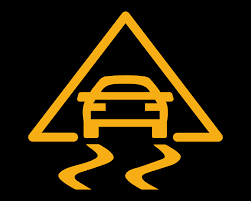

Pour commencer, le premier engin créé par l'homme considérer comme une voiture s'appele la Benz Patent Motorwagen en 1886.

Henry FROD - Le père de l'automobile à la chaine. Né au Michigan le 30 juillet 1863, Henry Ford crée sa toute première automobile le 4 juin 1896. La Quadracycle possédait un moteur 2 cylindres, créant une puissance de 4 chevaux. Il pouvait atteindre la vitesse fulgurante de 32 km/heure.

Le Fordisme, modèle d’organisation que l’on doit à Henry Ford, est basé sur une production standardisée de masse. La réussite du modèle Ford est lié aux deux ingrédients symboliques, la Ford T et l’usine de River Rouge qui l’a produite. C’est dans cette usine que les matières premières se présentaient sur la ligne d’assemblage pour ressortir en voitures achevées à l’autre extrémité.
Les toutes premières voitures à peine équipées de carrosserie font preuve d’une insécurité des plus importante, bien que celle-ci n'allait pas à des vitesse fulgurante le danger n’est néanmoins pas à épargner. La ceinture de sécurité n’est devenue obligatoire qu’en 1967. Une mesure qui a permis d’améliorer la sécurité des automobilistes.
L’accidentalité routière explose après guerre avec l’expansion du parc automobile, cependant les réseaux routiers sont inadaptés et les conducteurs insuffisamment formés. C’est alors que le circuit de recueil des données d’accidents, fiabilisé en 1954, comptabilise 7166 personnes tuées à 3 jours (décédées sur le coup ou dans les 3 jours suivant l’accident). La sécurité routière n’est pas encore considérée comme un enjeu de politique publique mais à partir de 1960 est lancé le traitement de points noirs. Entre 1960 et 1970, la mortalité augmente de +56%, le trafic est multiplié par 2,3 et le nombre de personnes tuées par milliard de km parcourus passe de 111 à 81.
Avec le temps, nous avons vu l'arriver de plusieurs inovations comme des améliorations sur la carroserie et d'autres choses comme : - ESP (Electronic Stability Program)  - ABS (Anti Blocage System)
Ces noms regroupent en gros beaucoup de capteurs et de programme, pleins de petites choses qui semble insignifiant mais qui on demandé tellement de temps et de travaille.